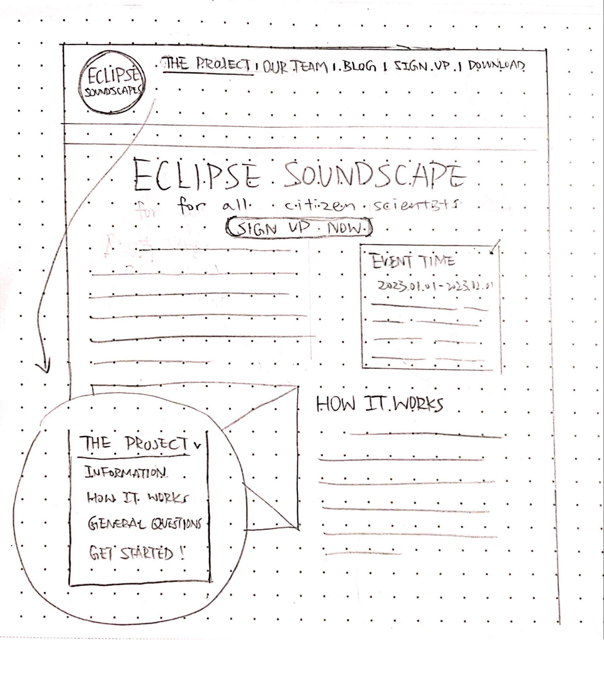

Project Intro
The ARISA Lab is working on the next Eclipse Soundscape project that is coming up in 2022/2023.
With the help of citizen scientists, NASA subject matter experts (SMEs) will collect audio recordings from eclipses and analyze acoustic data to determine how disruptions in light and circadian rhythms may affect ecosystems. They need an accessible and inclusive way for all citizen scientists to easily participate in this meaningful project.
Let me introduce you to the new Eclipse Soundscapes’ Citizen Science Project...
The Problem
Problem Statement
People like citizen scientists have need with learning and research about the impact of the eclipse on soundscape which can be resolved by an accessible educational platform to search and analyze sound data and how the eclipse affects life on earth. We know we’re right when our users continuously engaging in our website.

Key Performance Indicators
-
Persistence
Number of days volunteers are executing tasks -
Quantity
Number of completed tasks/sound recordings
How many people visit the website/app
How often do they visit -
Intensity
Total time spent by volunteers in executing project tasks -
Quality
Reliability of contributed data
Users’ uploading feedback/academic response
The Research
Main Takeaways
After collecting the responses from quantitative surveys and interviews, we found out Spotify and YouTube are two of the most common platforms associated with sound people normally use. Users’ favorite features are the ability to customize their own playlists and to share with others. The frustrations people have encountered the most is the advertisements
In terms of online training courses that we are going to implement into our website, our interviewees want the ability to change the playback speed and to skip around easily so they can focus on materials they want to learn about. In order to have more motivation to learn, our interviewees also want a rewarding system, pop quizzes, easy communication with other students and also lots of visualizations of the learning materials etc.
The main reason our interviewees want to learn something new is that they are hoping to gain knowledge and skills that will help them in the future. And if they were to learn about sound data, what excites and intrigues them the most are the visualizations of the sound, fun analysis, and also the reasons/stories behind the sound data.
In terms of the current website of the Citizen Science Project, our interviewees found it a little difficult to enjoy: there is too much text displaying on the website with no consistency of styles. It lacks a clear hierarchy of information and the navigation bar is also confusing. The home page is not visually appealing and interesting which discourages the users to continue exploring the website. It is also not consistent with image sizes, aesthetics and style etc.
In order to have a more accessible website, our interviewees suggested that a good website should be simple and also visually appealing. It should have a clear hierarchy of information and also be responsive to different platforms and devices. A live chat with customer service would also be a plus for a website as well.
When asked about where they want to see our sound datas, our interviewees suggested that they want to see the datas on a secondary page instead of the home page. However, there should be a clear navigation/indication on the home page as well as the navigation bar that will lead the user to the data page. Our interviewees also preferred to see 2D visualizations of the sound datas like bars, circles and sound waves of different colors that would easily acknowledge them with different information.
Interview
Online Workshop/Training
-
Ability to change the playback speed and to skip around easily.
-
Rewarding system, pop quizzes, easy communication with other students, visualizations of the learning materials.
-
Knowledge and skills that are useful in the future.
-
Visualizations of the sound, fun analysis, and also the reasons/stories behind the sound data.
Problem with Current Website
-
Too much text displaying on the website.
-
Lack of a clear hierarchy of information.
-
Navigation bar is confusing.
-
Not consistent with image sizes.
-
Not visually appealing.
The Design
Persona
Journey Map
Site Map
Sketches


Initial Wireframes

*prototype link below
Data Visualization Accessibility
-
Deuteranopia is a type of red-green color blindness characterized by the inability to distinguish red and green pigments.
-
Protanopia is blindness to red, a state in which the red cones are absent, leaving only the cones that absorb blue and green light.
-
Tritanopia is a condition where a person cannot distinguish between blue and yellow colors.
-
Grayscale is a complete lack of the perception of color in a subject, seeing only in black, white, and shades of grey.
The Final Product
Prototype
Explore PrototypeRetrospective
Future Focus
-
Design -- Color Contrast / Videos - captions & transcript / Semantic Structure / Labeled Forms
-
Development -- Alternative Text / Correct Use of Headers / Labels / Keyboard Accessible